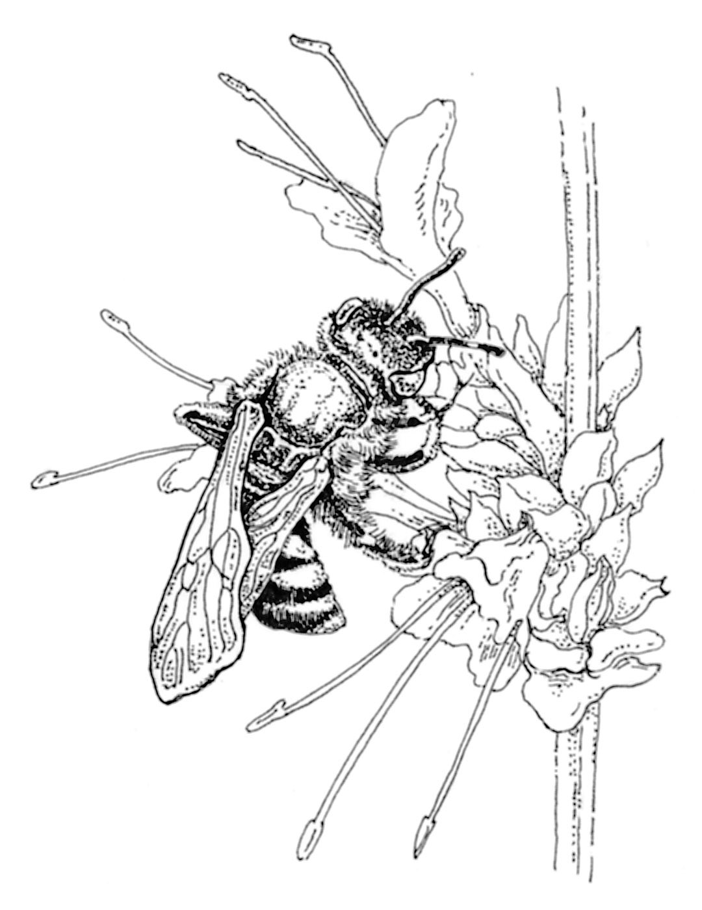

O albină lucrătoare este orice albină femela care nu are capacitatea de reproducere deplină a albinei regine a coloniei. Albina lucratoare adună polenul în coșurile de polen de pe picioarele din spate și îl transportă înapoi la stup, unde este folosit ca hrană pentru larvele în curs de dezvoltare. Polenul transportat pe corpul lor poate fi transportat către o altă floare unde o mică porțiune poate atinge pistilul, ducând la polenizarea încrucișată. O cantitate semnificativă din alimentația mondială, în special fructe, depinde în mare măsură de polenizarea culturilor de către albine.